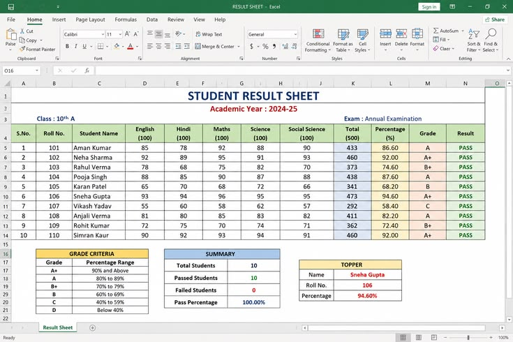
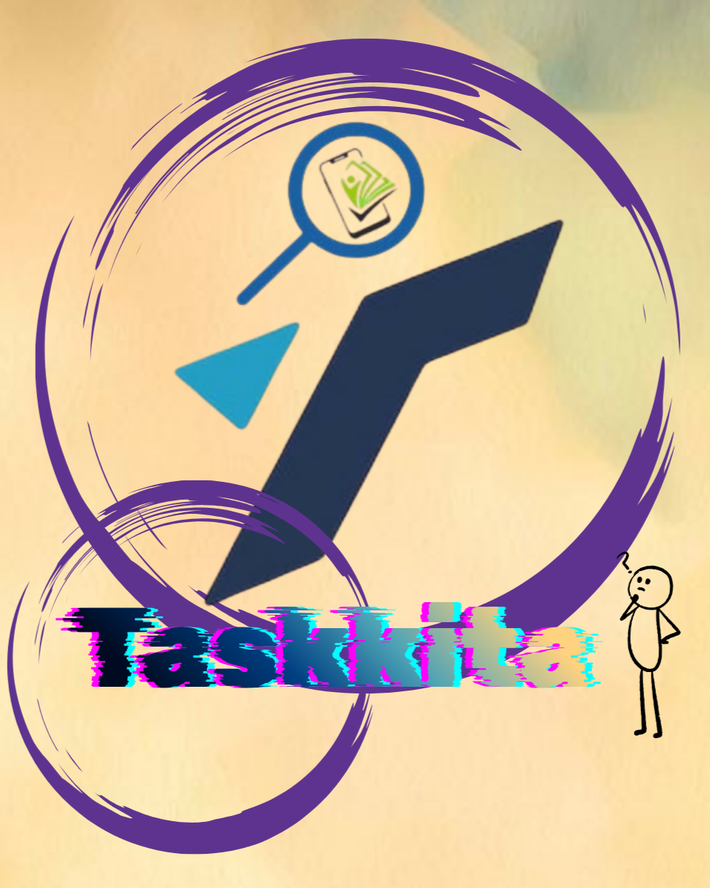

HTML5
I’m learning to create clean and attractive web pages using headings, lists, links, images, and forms. With practice, I want to make my websites more organized, simple, and user-friendly.
BSIT-1E
I’m learning how a web page goes from a blank file to something I can share. This is where I keep my class activities and small experiments.
A LITTLE BACKGROUND
I’m LYRA MAY CLAIRE PAUSAL,I am a first-year Information Technology student at CPC College. I chose IT because I am interested in learning how computers work and how to create useful programs and digital solutions. I want to develop my skills and turn my ideas into something I can build and share with others.H
I’m still learning and trying to improve my skills in web development. Sometimes, my code works perfectly, but there are also times when I get stuck because of small mistakes. Even though it can be frustrating, I know these experiences are part of learning, and I’m slowly getting better with every try.
After class, I enjoy listening to music, playing games with my friends, taking photos, editing pictures, drawing, and reading books. I also love doing makeup, creating new things, and sewing new design of clothes. I like exploring different hobbies because they allow me to express my creativity, learn new skills, and try something different whenever I have free time.
This year, I want to improve my coding skills, understand how code works, and create websites that look good on phones and computers. I know mistakes are part of learning, so I’ll keep practicing, stay patient, and never give up on improving myself.
WHAT I’M LEARNING
I’m learning to create clean and attractive web pages using headings, lists, links, images, and forms. With practice, I want to make my websites more organized, simple, and user-friendly.
I am learning about the CSS box model, Flexbox, and grid layouts to improve the design of my web pages. I am also practicing how to create responsive layouts that adjust properly to different screen sizes, especially on laptops and mobile phones.
I’m learning how to use spacing, colors, and responsive classes to make my website look better. I’m also practicing how to understand each class and how it affects the design.
In our class activities, I practice using variables, if-else statements, and loops by working through simple coding problems. I also write down notes and try small examples to help me understand how the code works and what happens at each step.
CLASSWORK & PRACTICE
I created three simple projects to showcase my skills in coding, Excel, and application editing. Each preview highlights a project I worked on while learning, practicing, and improving my skills in different areas of technology.
My program is a simple calculator made using the C programming language. It allows the user to choose between addition, subtraction, multiplication, and division. The user needs to select an operation and enter two numbers, and then the program will calculate and show the answer. For example, in my output, I chose multiplication and entered 4 and 6, so the program gave me the answer 24. Through this program, I learned how to use variables, get input from the user, display results, and apply basic mathematical operations in C.

This Excel spreadsheet shows the students’ scores, percentages, grades, and results for their annual examination. It also includes the grading criteria, a summary of the students’ performance, and the top student. There are 10 students, and all of them passed, with a 100% passing rate.

TaskKita is an application that helps unemployed people find jobs based on their skills and abilities, even if they have limited educational backgrounds. It gives them a chance to earn money, support their families, and find better opportunities in life.
CONTACT
I’m up for comparing notes, talking through an exercise, or hearing what you’re learning. Email is the easiest way to reach me.